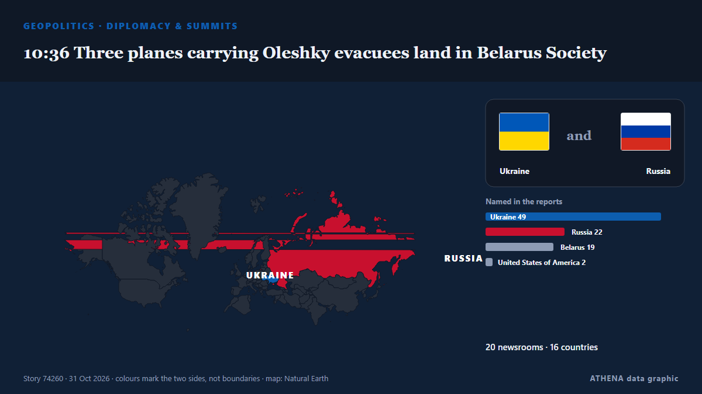

Геополитика, политика и безопасность
Заголовки приводятся на английском языке, как они были опубликованы.

Дипломатия и саммиты10:36 Three planes carrying Oleshky evacuees land in Belarus Society
Four planes transporting evacuees from the war-ravaged city arrived in Belarus's Gomel earlier on Saturday. из Al Jazeera English
| 18 окт. | 52 |
|---|---|
| 19 окт. | 191 |
| 20 окт. | 86 |
| 21 окт. | 166 |
| 22 окт. | 274 |
| 23 окт. | 256 |
| 24 окт. | 177 |
| 25 окт. | 180 |
| 26 окт. | 320 |
| 27 окт. | 280 |
| 28 окт. | 224 |
| 29 окт. | 210 |
| 30 окт. | 263 |
| 31 окт. | 59 |
UK PM Burnham says he is ‘open’ to formal apology for slavery, but rules out reparations
At least 12.5 million Africans were abducted and sold into slavery. из Express Tribune
Iran's supreme leader warns US, Israel against new attacks
Mojtaba Khamenei issued the warning following threats from the Islamic republic's foes of a possible resumption of strikes. из Free Malaysia Today
Qatari Mediators Return to Tehran in Push for US-Iran Peace Deal
Qatari mediators returned to Tehran on Friday to advance efforts for a US-Iran agreement, but disagreements over nuclear negotiations, oil sanctions and a US port blockade continue to obstruct a… из Khaama Press
Residents evacuated from Russian-occupied Oleshky reach Ukraine after localized ceasefire
The civilians traveled by bus and plane through Russia and Belarus, following a deal brokered by U.S. first lady Melania Trump. из PBS NewsHour World
US attacks 2 Iranian fishing boats off Masan, Qeshm Island
Iranian state broadcaster IRIB, citing a Hormozgan province official, said on Saturday that the US attacked two fishing boats near Qeshm Island, leaving two fishermen missing and one wounded. из Business Recorder
Oil jumps 2%, settles at 6-month highs on fears of escalation in Iran
Oil prices jumped more than 2 percent on Friday and settled at their highest levels since the end of April, as traders braced for a potential escalation in the Iran war after the U.S. midterm… из The Korea Times
Brazil's Lula to attend UN COP31 climate summit in Turkey
Our experts unpack what Lula’s victory means for Brazil’s ties with Washington and how it could reshape a region trending right. из Atlantic Council
Saudi-led coalition says it intercepted Houthi drone near Riyadh
Riyadh: Saudi forces on Tuesday intercepted a ballistic missile aimed at the kingdom's capital, said a spokesman for the Riyadh-led coalition backing Yemen's government, after auth... из Oman Observer
Flavio Bolsonaro says he left Brazil because he is the victim of 'persecution'
BRASILIA: Former conservative presidential candidate Flavio Bolsonaro said on Friday that he fled Brazil for the United States because he was a victim of “persecution” in his country. из New Straits Times
US Costs of Iran War Rise to Over $47 Billion, According to Pentagon Estimate
More than $6 billion would be needed to replace military equipment and 'platform losses' из Express Tribune
What Maria Corina Machado’s return to Venezuela means for its democratic transition
CARACAS, Oct 23 - The Venezuelan opposition movement headed by Nobel Peace Prize laureate Maria Corina Machado is preparing for eventual elections, including a new effort to boost voter registration… из The Straits Times
Pentagon tells Europeans to cool their rhetoric on Russia, sources say
US message reflect debate within NATO to publicly address threat of increasingly assertive Russia. из Express Tribune
Greek container ship sinks after drone attack off Bulgaria
A Greek container ship has sunk after being hit by naval drones off Bulgaria on Wednesday, the Bulgarian government said, in the latest of a series of strikes on ships in the western Black Sea this… из Cyprus Mail
North Korea fires 'around a dozen' ballistic missiles into East Sea
North Korea launches around a dozen short-range ballistic missiles from Wonsan area of North Korea towards the Sea of Japan. из CNA (Channel NewsAsia)
‘Horrific’ Russian drone strike kills 14 at Ukraine train station
Another 14 people were wounded, including an 11-year-old boy and a man who had “both legs amputated”. из The Straits Times
Vance outreach to Iran related to medical supplies, says Trump
Oct 29 - US President Donald Trump said that Vice President JD Vance's outreach to Iran was about helping the country get medical supplies, after US media reported Vance had written to Tehran's top… из The Straits Times
Yemen's Houthis say they attacked Saudi Ras Tanura refinery, no Saudi confirmation
Yemen's Houthis claimed attacks on three Saudi oil facilities and two international airports. из The Jerusalem Post
Trump administration bolsters bid to block Alaska Senate certification
President Donald Trump’s administration filed a revised lawsuit on Thursday seeking to block Alaska’s election results if Republican incumbent Dan Sullivan loses narrowly and issued more than 40… из FBC News
Michael Carrick ‘not surprised’ to still be in Manchester United role
AFC Bournemouth visit Old Trafford on Sunday buoyed by a European win against seven-time continental champions AC Milan. из The National
ASEAN Envoy Ends Myanmar Trip With No Public Aung San Suu Kyi Meeting
Despite repeated ASEAN requests for access, Philippine Foreign Secretary Lazaro ended her Myanmar visit without a confirmed meeting with Aung San Suu Kyi. из The Irrawaddy
EU considering Canada as ‘associate member’, Ursula von der Leyen says, despite internal opposition
The European Commission president was speaking at a Canada-EU summit in Montreal. из The Straits Times
N. Korea appears to test propaganda loudspeakers along border
SEOUL, Oct. 29 (Yonhap) -- North Korea appears to have conducted a test broadcas... из Yonhap (English)
UN votes overwhelmingly against US embargo on Cuba
The UN General Assembly on Wednesday adopted a resolution calling for an end to the decades-old US embargo on Cuba. из CGTN (World)
Iran says discussing plan with mediators to end war, reopen Hormuz
A Qatari delegation visited Tehran on Sunday for talks to review developments including the latest on negotiations, Hormuz and energy supplies. из Free Malaysia Today
US warns allies of possible Iran strikes after midterms: Report
Tensions across the Middle East remain high, with the United States reportedly preparing for potentially major military operations against Iran following the US midterm elections, while fighting… из CGTN (World)
EU and Canada to bring ties to 'highest' possible level at summit
The EU and Canada want to bring their relationship to the "highest level possible" as they face a "world of growing rivalries," the 27-nation bloc's chief said Thursday ahead of a meeting with… из The Local Spain
Student Movement Brings the Vucic Era to an End in Serbia, Even in the Eyes of the OSCE and the oiip
Sunday’s vote could reshape the country’s political future. из EUobserver
Russia, Ukraine say Oleshky demining operations complete, humanitarian operation to proceed
The localised ceasefire was announced on Oct 23. из The Straits Times
Houthis strike Yemen's Aden airport after evacuation warning
ADEN/DUBAI, Oct 28 - Yemen's Houthis attacked Aden airport on Wednesday, government officials said, after the Iran-aligned group warned people to evacuate the facility as fighting escalated in the… из The Straits Times
Israeli drone strike kills two in central Gaza
Several people wounded in Israeli strike on tent sheltering displaced Gazans, Wafa reports Several displaced Gazans were injuries on Thursday evening following an Israeli strike west of Gaza City… из Middle East Eye
Norwegian prime minister denies Putin lectured him and Finnish president on medieval Slavs during call
Finnish President Alexander Stubb and Norwegian Prime Minister Jonas Gahr Støre spoke to Vladimir Putin about Russia’s war against Ukraine and diplomatic efforts to end it, after consulting Kyiv. из Ukrainska Pravda (English)
Russia woos African leaders at Moscow summit
Moscow seeks to strengthen ties with countries it sees as 'natural allies' against the West amid heavy sanctions over its Ukraine offensive. из Free Malaysia Today
Norway trolls Trump with toilet joke after his Nobel Prize meltdown
Norway’s tourist board hit back at the US president’s tantrum over not being awarded the Nobel Prize. из The Independent
Eisenkot, Netanyahu’s Main Rival in Israel’s Election, Faces a Dilemma
If Eisenkot beats Netanyahu, he will need extraordinary political skill to form a coalition – and face challenges greater than any prime minister before him, even Rabin. из Haaretz (English)